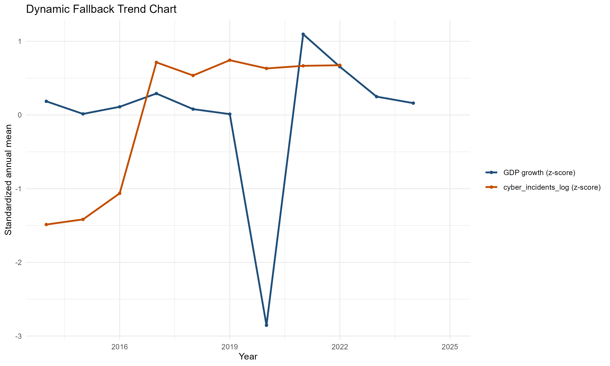
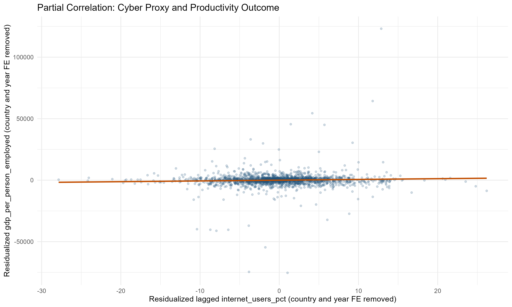
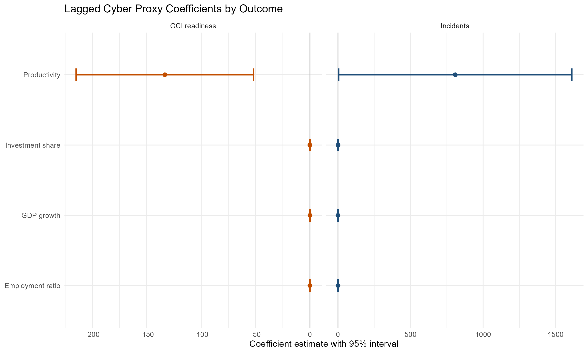

| metric | value |
|---|---|
| Rows | 2696 |
| Countries | 224 |
| Year min | 2014 |
| Year max | 2025 |
Cyber Macro Impact Pilot
Open-Data Panel Evidence on Cyber Risk and Macroeconomic Outcomes, 2014–2025
Keywords
cybersecurity, macroeconomics, panel data, fixed effects, cyber risk, ITU Global Cybersecurity Index, cyber incidents, productivity
Abstract
This note presents an open-data, country-year panel pilot examining how cyber risk indicators relate to macroeconomic outcomes. Using a balanced panel of 224 country-territory units over 2014–2025, we estimate two-way (country and year) fixed-effects models with country-clustered standard errors, regressing GDP growth, labour productivity, the investment ratio, and the employment ratio on lagged measures of cyber incident exposure (World Bank annex counts) and cyber readiness (ITU Global Cybersecurity Index). To address the discontinuous publication schedule of the GCI, we apply a transparent linear-interpolation and bounded-carry rule between the 2020 and 2024 editions and report a percentile-normalised variant as a scale-sensitivity check.
Headline results are modest. Pooled lagged-incident coefficients are uniformly small and statistically insignificant at conventional levels; readiness coefficients are directionally negative for productivity, investment, and employment in the level specification and statistically significant for productivity and employment, with the percentile-normalised variant preserving the sign throughout but losing significance. Income-group splits show that the readiness association is concentrated in high-income economies. Estimates should be interpreted as conditional associations, not causal effects.
Reporting standard. All estimates in this note are interpreted as conditional associations rather than causal effects, following the source-consistent evidence standard for cyber-risk macro analysis (Kopp et al., 2017; Organisation for Economic Co-operation and Development, 2024).
1 Introduction
Cyber incidents and the institutional capacity to manage them are now routine entries on the macro-financial risk register, yet the empirical record on their economic correlates remains thin and methodologically fragmented (Cobos & Cakir, 2024; Organisation for Economic Co-operation and Development, 2024). Two structural problems explain the gap. First, there is no internationally comparable, country-year measure of direct cyber expenditure in the open data ecosystem; analysts must rely on indirect proxies — incident counts, readiness indices, and digital adoption controls — each with known disclosure or scaling limitations. Second, public cross-country indicators that do exist are typically published at irregular intervals (the ITU Global Cybersecurity Index, for example, is released as discrete editions rather than as an annual series), which forces explicit imputation choices when constructing a balanced panel.
This note asks a single question:
How are country-level cyber readiness and incident intensity associated with macroeconomic outcomes — GDP growth, labour productivity, the investment ratio, and the employment ratio — in a panel of 224 country-territory units observed between 2014 and 2025?
The contribution is methodological as much as substantive. We assemble a fully reproducible open-data panel from World Development Indicators, ITU readiness data, and the World Bank cyber incidents annex; we estimate two-way fixed-effects specifications with explicit minimum-sample guardrails; and we report a dual-pathway readiness sensitivity (level scale and within-edition percentile) so that scale-representation effects can be separated from directional inference. The point estimates we report are deliberately framed as associational. The note’s value is therefore in the discipline of the measurement and the transparency of the imputation decisions, not in the size of the coefficients.
The remainder of this note is organised as follows. Section 2 documents the panel and source datasets. Section 3 sets out the empirical strategy, the GCI interpolation rule, and the fallback specifications used when two-way fixed effects are not estimable. Section 4 presents headline, robustness, comparison, and heterogeneity results. Section 5 discusses GCI measurement sensitivity in detail. Section 6 catalogues the limitations that bound interpretation. Section 7 concludes with implications for measurement practice and outlines a constructive research agenda.
2 Data
The analysis uses a country-year panel constructed from four open data spines: World Development Indicators for macroeconomic outcomes and controls (World Bank, n.d.b, n.d.a); ITU sources for readiness and digital-context indicators (International Telecommunication Union, n.d.a, n.d.c, n.d.b); the World Bank’s published annex of disclosed cyber incidents per country for incident exposure (World Bank, 2024); and World Bank country metadata for income-group classification used in the heterogeneity analysis. Regional and income-group aggregate codes (for example, “EUU” or “LMC”) are removed before panel construction so that all fixed-effects identification operates on country and territory units.
Table 1 summarises the assembled panel.
Note: World Bank regional and income-group aggregate codes are excluded prior to panel construction. Panel covers 2014–2025; year coverage varies by indicator and country. Sources: World Development Indicators (World Bank, n.d.b); ITU GCI (International Telecommunication Union, n.d.a); open incident repositories (World Bank, 2024).
The panel is unbalanced in practice: WDI controls (inflation, trade, population) are observed annually, GCI readiness is published in discrete editions (2020 and 2024 within the panel window), and the cyber incidents annex covers 2014–2022 with later years carried forward. Listwise deletion in the regressions therefore varies across specifications; minimum-sample thresholds (50 observations and 10 countries) are applied uniformly.
Table 2 provides the full variable dictionary, including the source attribution and any transformation applied during panel construction.
| variable | indicator | source | frequency | transform |
|---|---|---|---|---|
| cyber_incidents | INCIDENTS_OPEN | Open incidents source | annual | none |
| cyber_incidents_log | INCIDENTS_OPEN | Open incidents source | annual | none |
| employment_ratio | SL.EMP.TOTL.SP.ZS | World Development Indicators | annual | none |
| gcf_gdp | NE.GDI.TOTL.ZS | World Development Indicators | annual | none |
| gci_overall | GCI_OPEN | ITU GCI tier extraction | annual | none |
| gci_overall_imputed | GCI_OPEN | Derived: linear interpolation between GCI 2020 and 2024 anchor years | annual | flag |
| gci_overall_norm | GCI_OPEN | Derived: within-edition percentile scaling in anchor years (2020, 2024), then interpolation/carry | annual | percentile scale [0,1] |
| gci_overall_norm_imputed | GCI_OPEN | Derived: interpolation/carry flag for gci_overall_norm | annual | flag |
| gci_tier | GCI_OPEN | ITU GCI tier extraction | annual | none |
| gdp_growth | NY.GDP.MKTP.KD.ZG | World Development Indicators | annual | none |
| gdp_per_person_employed | SL.GDP.PCAP.EM.KD | World Development Indicators | annual | none |
| income_group | WB_COUNTRY_METADATA | World Bank country metadata endpoint | latest available | none |
| income_group_model | WB_COUNTRY_METADATA | World Bank country metadata endpoint | latest available | High income / Upper middle income / Lower income pooled |
| inflation_cpi | FP.CPI.TOTL.ZG | World Development Indicators | annual | none |
| internet_users_pct | IT.NET.USER.ZS | World Development Indicators | annual | none |
| lending_type | WB_COUNTRY_METADATA | World Bank country metadata endpoint | latest available | none |
| population_total | SP.POP.TOTL | World Development Indicators | annual | none |
| trade_gdp | NE.TRD.GNFS.ZS | World Development Indicators | annual | none |
| wb_region | WB_COUNTRY_METADATA | World Bank country metadata endpoint | latest available | none |
Note: Variables sourced from World Development Indicators (World Bank), ITU GCI (ITU), and open incident repositories. Imputed and derived variables are distinguished by the transform column. Full source metadata available in data_processed/data_dictionary.csv.
Figure 1 offers a high-level descriptive view of how the cyber proxy and aggregate GDP growth co-move across the panel window. The two series are standardised to a common scale to permit visual comparison. The figure is descriptive only and is not intended as evidence of any cyber–macro mechanism: common global shocks, most prominently the 2020 pandemic recession, can drive co-movement in cross-country annual means without any direct causal channel.

Note: Both series are standardised (z-score) cross-country annual means to allow comparison across different units of measurement. GDP growth sourced from World Development Indicators (World Bank). Cyber proxy is the primary available regressor (ITU GCI or log cyber incidents, depending on panel availability). Co-movement should be interpreted as descriptive association only; common global shocks (e.g., the COVID-19 pandemic in 2020) may drive apparent correlation without any direct cyber-macro mechanism. Sources: (International Telecommunication Union, n.d.a; World Bank, 2024, n.d.b).
3 Empirical Strategy
3.1 Specification
For each macroeconomic outcome \(y_{it}\) for country \(i\) in year \(t\), we estimate
\[ y_{it} = \beta\,C_{i,t-k} + \gamma' X_{i,t-k} + \alpha_i + \lambda_t + \varepsilon_{it}, \]
where \(C_{i,t-k}\) is a single cyber regressor (incident exposure or readiness) at lag \(k\), \(X_{i,t-k}\) is the vector of macro controls (inflation, trade openness, population) at the same lag, \(\alpha_i\) is a country fixed effect, \(\lambda_t\) is a year fixed effect, and standard errors are clustered at the country level. The headline specification uses \(k=1\); a distributed-lag robustness specification uses \(k \in \{2,3\}\). Each regression requires a minimum of 50 country-year observations and 10 distinct countries to be reported.
Significance markers in all tables follow conventional thresholds: + denotes \(p < 0.10\), * denotes \(p < 0.05\), ** denotes \(p < 0.01\), and *** denotes \(p < 0.001\). These conventions apply throughout the report.
3.2 GCI interpolation and carry-forward
The ITU Global Cybersecurity Index is published as discrete editions rather than as an annual series. Within the panel window, only the 2020 edition (direct scores on a 0–100 scale) and the 2024 edition (tier midpoints of 97.5, 90, 70, 37.5, and 10) provide observations. Years 2021–2023 are linearly interpolated between the two anchors; pre-2020 years carry the 2020 value backward, and 2024–2025 years carry the 2024 value forward. Every derived (non-anchor) value is flagged by the gci_overall_imputed indicator so that the imputation footprint is auditable.
Table 3 quantifies the share of the GCI sample that is observed against the share that is interpolated or carried.
| year_band | gci_status | country_years | total_country_years |
|---|---|---|---|
| 2014-2019 carry-backward | derived | 1181 | 1327 |
| 2014-2019 carry-backward | missing | 146 | 1327 |
| 2020 observed anchor | derived | 27 | 247 |
| 2020 observed anchor | missing | 26 | 247 |
| 2020 observed anchor | observed_anchor | 194 | 247 |
| 2021-2023 interpolated | derived | 590 | 664 |
| 2021-2023 interpolated | missing | 74 | 664 |
| 2024 observed anchor | derived | 29 | 243 |
| 2024 observed anchor | missing | 22 | 243 |
| 2024 observed anchor | observed_anchor | 192 | 243 |
| 2025 carry-forward | derived | 193 | 215 |
| 2025 carry-forward | missing | 22 | 215 |
Note: Observed anchor years are 2020 (GCI edition with direct 0–100 scores) and 2024 (tier midpoints: 97.5, 90, 70, 37.5, 10). Years 2021–2023 are linearly interpolated between anchors. Pre-2020 years carry the 2020 value backward; post-2024 years carry the 2024 value forward. The gci_overall_imputed flag identifies all non-observed (derived) values. Source: ITU GCI (International Telecommunication Union, n.d.a).
To separate genuine directional findings from artefacts of the GCI level scale, we additionally compute a percentile-normalised variant (gci_overall_norm) that maps each anchor year’s observed scores onto a within-edition \([0,1]\) percentile rank before applying the same interpolation and carry rule. The two variants share an identical estimand and differ only in the scale on which the readiness construct is represented; the comparison is reported in Table 6 and discussed in §5.
3.3 Fallback specifications
When listwise deletion leaves too few observations to identify the two-way fixed-effects model — typically because a regressor is observed for only one or two years in the relevant subsample — we fall back to a year-fixed-effects specification with heteroskedasticity-robust standard errors, or, in the limit of a single-year cross-section, to OLS with heteroskedasticity-robust standard errors and no fixed effects. Fallbacks are applied automatically by the comparison estimator in R/04_model_specs.R; they preserve the lagged-regressor structure and the minimum-sample thresholds.
4 Results
4.1 Headline Estimates
Table 4 reports the headline two-way fixed-effects estimates with one-year lagged cyber incidents as the main regressor.
| outcome | term | estimate | std_error | p_value | nobs |
|---|---|---|---|---|---|
| gdp_growth | l1_cyber_incidents_log | -0.121 | (0.228) | 0.598 | 860 |
| gdp_growth | l1_inflation_cpi | 0.000 | (0.006) | 0.954 | 860 |
| gdp_growth | l1_trade_gdp | -0.045 | (0.043) | 0.299 | 860 |
| gdp_growth | l1_population_total | -0.000 | (0.000) | 0.194 | 860 |
| gdp_per_person_employed | l1_cyber_incidents_log | 808.261+ | (409.866) | 0.051 | 854 |
| gdp_per_person_employed | l1_inflation_cpi | -10.532 | (9.975) | 0.293 | 854 |
| gdp_per_person_employed | l1_trade_gdp | -14.537 | (49.952) | 0.772 | 854 |
| gdp_per_person_employed | l1_population_total | -0.000 | (0.000) | 0.541 | 854 |
| gcf_gdp | l1_cyber_incidents_log | 0.485+ | (0.268) | 0.073 | 850 |
| gcf_gdp | l1_inflation_cpi | -0.016 | (0.018) | 0.378 | 850 |
| gcf_gdp | l1_trade_gdp | 0.015 | (0.021) | 0.463 | 850 |
| gcf_gdp | l1_population_total | 0.000 | (0.000) | 0.535 | 850 |
| employment_ratio | l1_cyber_incidents_log | 0.187 | (0.126) | 0.138 | 857 |
| employment_ratio | l1_inflation_cpi | -0.005 | (0.004) | 0.230 | 857 |
| employment_ratio | l1_trade_gdp | 0.027* | (0.012) | 0.035 | 857 |
| employment_ratio | l1_population_total | -0.000 | (0.000) | 0.582 | 857 |
Note: Two-way fixed-effects (country and year) OLS with one-year lagged cyber incidents (l1_cyber_incidents_log) and controls (inflation, trade, population). Standard errors clustered at country level. Outcomes: GDP growth (gdp_growth), GDP per person employed (gdp_per_person_employed), gross capital formation as share of GDP (gcf_gdp), employment ratio (employment_ratio). Minimum 50 observations and 10 countries required per model. Sources: (World Bank, 2024, n.d.b).
The lagged-incident coefficient is small in absolute magnitude across all four outcomes and is not statistically significant at conventional levels in any specification. The point estimates for productivity and the investment ratio reach only marginal significance (\(p < 0.10\)). Read alongside the controls — population and trade openness are likewise non-significant once country and year fixed effects absorb the cross-sectional and temporal variation — the headline message is that within-country, year-on-year movements in disclosed cyber incidents do not detectably co-move with the next year’s macro outcomes once persistent country characteristics and global year shocks are removed. This is consistent with the disclosure-dependence concern that incident counts are a lower bound on true exposure (Cobos & Cakir, 2024).
Figure 2 visualises the partial correlation between the lagged cyber proxy and labour productivity, with country and year fixed effects removed from both axes. The cloud is wide and the fitted slope is shallow, reinforcing the headline-table result that any conditional association is small relative to the residual variance.

Note: Each point represents a country-year observation. Both axes display residuals after removing country and year fixed effects via OLS with factor dummies. The fitted line is an OLS regression of residualised outcome on residualised regressor. A positive slope indicates that countries with above-average cyber proxy values in the prior year tend to show above-average productivity outcomes, conditional on country-specific and time-specific factors. This is a descriptive partial-correlation plot; it does not establish causality. Sources: World Development Indicators (World Bank, n.d.b); ITU GCI (International Telecommunication Union, n.d.a); open incident repositories (World Bank, 2024).
4.2 Robustness to Lag Structure
Table 5 replaces the one-year lag with two- and three-year lags of the cyber-incidents regressor, leaving the fixed-effects structure and the controls unchanged. The aim is to test whether a slower-acting incident effect is being missed at the one-year horizon.
| outcome | term | estimate | std_error | p_value | nobs |
|---|---|---|---|---|---|
| gdp_growth | l2_cyber_incidents_log | 0.107 | (0.296) | 0.719 | 640 |
| gdp_growth | l3_cyber_incidents_log | 0.019 | (0.275) | 0.946 | 640 |
| gdp_growth | l1_inflation_cpi | 0.009** | (0.003) | 0.003 | 640 |
| gdp_growth | l1_trade_gdp | 0.012 | (0.029) | 0.679 | 640 |
| gdp_growth | l1_population_total | 0.000+ | (0.000) | 0.100 | 640 |
| gdp_per_person_employed | l2_cyber_incidents_log | 189.970 | (349.518) | 0.588 | 637 |
| gdp_per_person_employed | l3_cyber_incidents_log | 721.771 | (473.949) | 0.131 | 637 |
| gdp_per_person_employed | l1_inflation_cpi | -7.182 | (7.386) | 0.333 | 637 |
| gdp_per_person_employed | l1_trade_gdp | 24.031 | (37.345) | 0.521 | 637 |
| gdp_per_person_employed | l1_population_total | -0.000 | (0.000) | 0.236 | 637 |
| gcf_gdp | l2_cyber_incidents_log | 0.509+ | (0.259) | 0.052 | 632 |
| gcf_gdp | l3_cyber_incidents_log | 0.139 | (0.224) | 0.535 | 632 |
| gcf_gdp | l1_inflation_cpi | -0.005 | (0.010) | 0.612 | 632 |
| gcf_gdp | l1_trade_gdp | 0.010 | (0.022) | 0.650 | 632 |
| gcf_gdp | l1_population_total | 0.000 | (0.000) | 0.250 | 632 |
| employment_ratio | l2_cyber_incidents_log | 0.207 | (0.147) | 0.162 | 638 |
| employment_ratio | l3_cyber_incidents_log | 0.159 | (0.126) | 0.210 | 638 |
| employment_ratio | l1_inflation_cpi | -0.003 | (0.003) | 0.384 | 638 |
| employment_ratio | l1_trade_gdp | 0.003 | (0.011) | 0.761 | 638 |
| employment_ratio | l1_population_total | 0.000 | (0.000) | 0.178 | 638 |
Note: Distributed-lag robustness specification replacing the one-year lag with two- and three-year lags (l2_, l3_) of the cyber incidents regressor. Two-way fixed effects and country-clustered standard errors are retained. Comparison with Table 4 tests whether associations are stable across lag structures.
The distributed-lag coefficients confirm the headline finding: there is no statistically significant association between lagged incident counts and any of the four outcomes at horizons of one, two, or three years. Consistency across lag structures rules out the explanation that the headline null is purely a question of timing.
4.3 Incidents versus Readiness
The headline incident specification is uninformative about the capacity to manage cyber risk. Table 6 estimates the same lagged two-way fixed-effects model separately on incident exposure (l1_cyber_incidents_log), level-scale readiness (l1_gci_overall), and percentile-normalised readiness (l1_gci_overall_norm), so that the three regressors share an identical estimand and differ only in their conceptual content and scale.
| outcome | regressor | term | estimate | std_error | p_value | nobs |
|---|---|---|---|---|---|---|
| gdp_growth | cyber_incidents_log | l1_cyber_incidents_log | -0.121 | (0.228) | 0.598 | 860 |
| gdp_growth | cyber_incidents_log | l1_inflation_cpi | 0.000 | (0.006) | 0.954 | 860 |
| gdp_growth | cyber_incidents_log | l1_trade_gdp | -0.045 | (0.043) | 0.299 | 860 |
| gdp_growth | cyber_incidents_log | l1_population_total | -0.000 | (0.000) | 0.194 | 860 |
| gdp_growth | gci_overall | l1_gci_overall | 0.034+ | (0.019) | 0.068 | 1517 |
| gdp_growth | gci_overall | l1_inflation_cpi | -0.003 | (0.007) | 0.659 | 1517 |
| gdp_growth | gci_overall | l1_trade_gdp | -0.020 | (0.020) | 0.297 | 1517 |
| gdp_growth | gci_overall | l1_population_total | -0.000 | (0.000) | 0.228 | 1517 |
| gdp_growth | gci_overall_norm | l1_gci_overall_norm | 0.816 | (2.896) | 0.779 | 1517 |
| gdp_growth | gci_overall_norm | l1_inflation_cpi | -0.003 | (0.007) | 0.644 | 1517 |
| gdp_growth | gci_overall_norm | l1_trade_gdp | -0.021 | (0.019) | 0.273 | 1517 |
| gdp_growth | gci_overall_norm | l1_population_total | -0.000 | (0.000) | 0.200 | 1517 |
| gdp_per_person_employed | cyber_incidents_log | l1_cyber_incidents_log | 808.261+ | (409.866) | 0.051 | 854 |
| gdp_per_person_employed | cyber_incidents_log | l1_inflation_cpi | -10.532 | (9.975) | 0.293 | 854 |
| gdp_per_person_employed | cyber_incidents_log | l1_trade_gdp | -14.537 | (49.952) | 0.772 | 854 |
| gdp_per_person_employed | cyber_incidents_log | l1_population_total | -0.000 | (0.000) | 0.541 | 854 |
| gdp_per_person_employed | gci_overall | l1_gci_overall | -133.385** | (41.642) | 0.002 | 1463 |
| gdp_per_person_employed | gci_overall | l1_inflation_cpi | -11.958 | (7.757) | 0.125 | 1463 |
| gdp_per_person_employed | gci_overall | l1_trade_gdp | 5.675 | (30.996) | 0.855 | 1463 |
| gdp_per_person_employed | gci_overall | l1_population_total | 0.000 | (0.000) | 0.960 | 1463 |
| gdp_per_person_employed | gci_overall_norm | l1_gci_overall_norm | -4478.857 | (4816.940) | 0.354 | 1463 |
| gdp_per_person_employed | gci_overall_norm | l1_inflation_cpi | -11.680 | (7.748) | 0.134 | 1463 |
| gdp_per_person_employed | gci_overall_norm | l1_trade_gdp | 9.034 | (33.011) | 0.785 | 1463 |
| gdp_per_person_employed | gci_overall_norm | l1_population_total | 0.000 | (0.000) | 0.903 | 1463 |
| gcf_gdp | cyber_incidents_log | l1_cyber_incidents_log | 0.485+ | (0.268) | 0.073 | 850 |
| gcf_gdp | cyber_incidents_log | l1_inflation_cpi | -0.016 | (0.018) | 0.378 | 850 |
| gcf_gdp | cyber_incidents_log | l1_trade_gdp | 0.015 | (0.021) | 0.463 | 850 |
| gcf_gdp | cyber_incidents_log | l1_population_total | 0.000 | (0.000) | 0.535 | 850 |
| gcf_gdp | gci_overall | l1_gci_overall | -0.078 | (0.049) | 0.109 | 1481 |
| gcf_gdp | gci_overall | l1_inflation_cpi | -0.015 | (0.015) | 0.309 | 1481 |
| gcf_gdp | gci_overall | l1_trade_gdp | 0.011 | (0.025) | 0.677 | 1481 |
| gcf_gdp | gci_overall | l1_population_total | -0.000 | (0.000) | 0.901 | 1481 |
| gcf_gdp | gci_overall_norm | l1_gci_overall_norm | -5.242 | (4.413) | 0.237 | 1481 |
| gcf_gdp | gci_overall_norm | l1_inflation_cpi | -0.015 | (0.015) | 0.311 | 1481 |
| gcf_gdp | gci_overall_norm | l1_trade_gdp | 0.012 | (0.025) | 0.642 | 1481 |
| gcf_gdp | gci_overall_norm | l1_population_total | -0.000 | (0.000) | 0.957 | 1481 |
| employment_ratio | cyber_incidents_log | l1_cyber_incidents_log | 0.187 | (0.126) | 0.138 | 857 |
| employment_ratio | cyber_incidents_log | l1_inflation_cpi | -0.005 | (0.004) | 0.230 | 857 |
| employment_ratio | cyber_incidents_log | l1_trade_gdp | 0.027* | (0.012) | 0.035 | 857 |
| employment_ratio | cyber_incidents_log | l1_population_total | -0.000 | (0.000) | 0.582 | 857 |
| employment_ratio | gci_overall | l1_gci_overall | -0.046*** | (0.013) | 0.001 | 1598 |
| employment_ratio | gci_overall | l1_inflation_cpi | -0.006+ | (0.003) | 0.063 | 1598 |
| employment_ratio | gci_overall | l1_trade_gdp | 0.026** | (0.009) | 0.003 | 1598 |
| employment_ratio | gci_overall | l1_population_total | -0.000 | (0.000) | 0.756 | 1598 |
| employment_ratio | gci_overall_norm | l1_gci_overall_norm | -2.056 | (1.829) | 0.263 | 1598 |
| employment_ratio | gci_overall_norm | l1_inflation_cpi | -0.006+ | (0.003) | 0.075 | 1598 |
| employment_ratio | gci_overall_norm | l1_trade_gdp | 0.028** | (0.010) | 0.004 | 1598 |
| employment_ratio | gci_overall_norm | l1_population_total | -0.000 | (0.000) | 0.799 | 1598 |
Note: Side-by-side comparison of incident exposure (l1_cyber_incidents_log) and readiness (l1_gci_overall, l1_gci_overall_norm) in identical two-way fixed-effects specifications with one-year lags. The normalised variant (gci_overall_norm) rescales GCI to a 0–1 percentile within each edition as a scale-sensitivity check. GCI values for 2021–2023 are linearly interpolated (see Table 3). Sources: (International Telecommunication Union, n.d.a; World Bank, 2024, n.d.b).
The readiness pathway tells a different story from the incident pathway. Lagged level-scale GCI carries a statistically significant negative association with productivity and with the employment ratio, and a directionally negative but non-significant association with the investment ratio. The signs are stable when readiness is rescaled to a within-edition percentile, although statistical significance is not preserved (see §5 for interpretation). The negative readiness coefficient is initially counterintuitive — a higher-readiness country in year \(t-1\) is associated with a lower-than-trend macro outcome in year \(t\) — but this should be read in light of the fact that the GCI readiness construct loads heavily on legal and institutional capability, which itself correlates with countries that have larger and more interconnected attack surfaces. The estimate is a within-country conditional association, not a behavioural elasticity.
Figure 3 summarises the comparison visually: lagged-incident coefficients cluster tightly around zero with confidence intervals that span both signs, whereas lagged-readiness coefficients are visibly displaced from zero for productivity and employment with intervals that exclude zero for the level specification.

Note: Points show OLS coefficient estimates from two-way (country and year) fixed-effects models with one-year lagged cyber regressors. Horizontal bars show 95% confidence intervals constructed from country-clustered standard errors. The vertical reference line is at zero. Panels are faceted by regressor type (Incidents vs GCI Readiness); scales are free across panels to accommodate differences in units. GCI readiness values for 2021–2023 are linearly interpolated between the 2020 and 2024 editions; see Table 3 for coverage details. Sources: (International Telecommunication Union, n.d.a; World Bank, 2024, n.d.b).
4.4 Income-Group Heterogeneity
The pooled estimates above mask potentially important variation across development levels. Table 7 stratifies the estimation by World Bank income classification (High income, Upper middle income, and a Lower-income pooled bucket combining Lower middle and Low income).
| income_group | outcome | regressor | term | estimate | std_error | p_value | nobs |
|---|---|---|---|---|---|---|---|
| High income | gdp_growth | cyber_incidents_log | l1_cyber_incidents_log | -0.375+ | (0.206) | 0.075 | 405 |
| High income | gdp_growth | gci_overall | l1_gci_overall | 0.061* | (0.024) | 0.014 | 531 |
| High income | gdp_per_person_employed | cyber_incidents_log | l1_cyber_incidents_log | 619.121 | (662.835) | 0.355 | 405 |
| High income | gdp_per_person_employed | gci_overall | l1_gci_overall | 294.091* | (110.716) | 0.011 | 504 |
| High income | gcf_gdp | cyber_incidents_log | l1_cyber_incidents_log | 0.540* | (0.215) | 0.015 | 404 |
| High income | gcf_gdp | gci_overall | l1_gci_overall | -0.043 | (0.058) | 0.464 | 519 |
| High income | employment_ratio | cyber_incidents_log | l1_cyber_incidents_log | -0.141 | (0.172) | 0.418 | 405 |
| High income | employment_ratio | gci_overall | l1_gci_overall | -0.014 | (0.021) | 0.517 | 550 |
| Upper middle income | gdp_growth | cyber_incidents_log | l1_cyber_incidents_log | 0.074 | (0.557) | 0.895 | 238 |
| Upper middle income | gdp_growth | gci_overall | l1_gci_overall | 0.030 | (0.055) | 0.588 | 402 |
| Upper middle income | gdp_per_person_employed | cyber_incidents_log | l1_cyber_incidents_log | -21.441 | (459.732) | 0.963 | 236 |
| Upper middle income | gdp_per_person_employed | gci_overall | l1_gci_overall | -198.180* | (82.130) | 0.020 | 399 |
| Upper middle income | gcf_gdp | cyber_incidents_log | l1_cyber_incidents_log | 0.072 | (0.514) | 0.890 | 238 |
| Upper middle income | gcf_gdp | gci_overall | l1_gci_overall | -0.022 | (0.048) | 0.651 | 402 |
| Upper middle income | employment_ratio | cyber_incidents_log | l1_cyber_incidents_log | 0.323+ | (0.167) | 0.060 | 236 |
| Upper middle income | employment_ratio | gci_overall | l1_gci_overall | -0.039+ | (0.020) | 0.057 | 438 |
| Lower income | gdp_growth | cyber_incidents_log | l1_cyber_incidents_log | -0.421 | (0.663) | 0.530 | 210 |
| Lower income | gdp_growth | gci_overall | l1_gci_overall | 0.041 | (0.065) | 0.530 | 571 |
| Lower income | gdp_per_person_employed | cyber_incidents_log | l1_cyber_incidents_log | 190.442 | (293.771) | 0.521 | 209 |
| Lower income | gdp_per_person_employed | gci_overall | l1_gci_overall | 14.726 | (22.935) | 0.523 | 550 |
| Lower income | gcf_gdp | cyber_incidents_log | l1_cyber_incidents_log | -0.118 | (0.810) | 0.885 | 201 |
| Lower income | gcf_gdp | gci_overall | l1_gci_overall | -0.042 | (0.118) | 0.724 | 547 |
| Lower income | employment_ratio | cyber_incidents_log | l1_cyber_incidents_log | -0.027 | (0.374) | 0.943 | 209 |
| Lower income | employment_ratio | gci_overall | l1_gci_overall | -0.032 | (0.026) | 0.216 | 596 |
Note: Income-group subsamples defined by World Bank classification: High income, Upper middle income, Lower income (Lower middle and Low income pooled). Eleven country/territory codes without income-group assignment are excluded from this analysis. Each row shows the lagged cyber regressor coefficient from a two-way fixed-effects model estimated on the income-group subsample; minimum thresholds of 50 observations and 10 countries per model apply. Source: World Bank country metadata (World Bank, n.d.b).
Three patterns emerge:
- High-income economies carry the readiness signal. The level-GCI productivity coefficient is statistically significant, and a comparable association is detectable in the percentile-normalised variant. The interpretation is consistent with the hypothesis that wealthier, more digitalised economies have larger productivity exposure to readiness changes — both as a benefit channel (better governance) and as a risk channel (more exposed digital infrastructure) (Organisation for Economic Co-operation and Development, 2024).
- Upper-middle-income economies show mixed and partially significant readiness associations and weak incident associations, suggesting transmission mechanisms that are heterogeneous within the bucket. The negative GCI–productivity association in this subsample is harder to interpret without firm-level data and may reflect measurement noise more than a structural channel.
- Lower-income economies exhibit wider intervals and fewer significant coefficients in every specification. Both the smaller sample size and the weaker disclosure architecture in this group (Cobos & Cakir, 2024; World Bank, 2024) are consistent with this attenuation.
Across all three groups, the lagged-incident coefficient is weaker than its pooled counterpart — a pattern that is consistent with disclosure heterogeneity diluting the within-group signal once country and year fixed effects have been absorbed. Readiness is therefore the more informative cyber regressor in the heterogeneity analysis, with the caveat that its interpretation depends on the GCI scale assumptions discussed in §5.
5 GCI Measurement Sensitivity
The two GCI variants reported above — the level-scale l1_gci_overall and the percentile-normalised l1_gci_overall_norm — share the same estimand, the same sample, and the same interpolation/carry rule. They differ only in how the readiness construct is represented: a 0–100 score versus a within-edition \([0,1]\) percentile. The pair therefore isolates the contribution of scale choice to the empirical findings, in the spirit of the OECD measurement framework that warns against drawing inference from a single proxy (Organisation for Economic Co-operation and Development, 2024).
The substantive pattern across the four outcomes is sign-stable. In every outcome, the level-scale and percentile-scale coefficients carry the same sign: positive for GDP growth, and negative for productivity, the investment ratio, and the employment ratio. Statistical power, however, differs. The level specification preserves significance for productivity and employment, while the percentile specification preserves the direction in every case but loses significance throughout. The mechanical reason is that the percentile transformation compresses GCI variation into a \([0,1]\) range and places greater weight on within-edition rank movement than on the underlying score level, which dampens year-on-year variation in the regressor and increases standard errors.
The interpretive guidance follows: the level-scale specification is the more informative point estimate, and the percentile-scale specification is best read as a sign-robustness bound. The fact that the sign is stable across both representations is a non-trivial check; it indicates that the level results are not an artefact of the raw 0–100 score magnitude. The fact that significance is lost in the percentile specification, however, is itself a measurement caveat: it confirms that interpolation and bounded carry of a discrete-edition index inject sufficient uncertainty into the readiness construct to make scale choices materially affect what is detectable (Cobos & Cakir, 2024; International Telecommunication Union, n.d.a).
6 Limitations
The interpretation of the results above is bounded by six limitations.
Cyber spending is missing. No internationally comparable, country-year measure of direct cyber expenditure exists in the open data ecosystem within the panel window. Readiness indicators and incident counts are structural proxies, not direct spending measures.
Incident exposure is disclosure-dependent. The World Bank annex covers 2014–2022, and post-annex years carry the last observed value forward. Disclosed-incident counts should be read as a lower bound on true exposure; cross-country differences in disclosure regimes mean that the regressor mixes true incidence with reporting capacity (Cobos & Cakir, 2024).
GCI scale discontinuity. The 2020 and 2024 GCI editions use methodologically different scoring approaches (direct scores in 2020; tier midpoints in 2024). The interpolation and carry rule is a transparent stitching device rather than a substantive estimate of unobserved annual GCI values. Readers should treat absolute level magnitudes for derived years as approximate; directional inference is more robust.
GCI is observed in two editions only. The interpolation supplies coverage for the intervening years but does not represent annual observation. The gci_overall_imputed flag isolates derived values for any reader who wishes to restrict attention to anchor years.
Incomplete metadata coverage in the heterogeneity analysis. World Bank income-group classification covers 213 of the 224 panel country/territory units (95.1%). The 11 unmatched codes — primarily small or disputed territories — are excluded from the heterogeneity stratification. Conclusions from the heterogeneity split apply to the classified subset; they may not generalise to unclassified or under-covered jurisdictions.
Cross-source methodological heterogeneity. Coverage, definitions, and collection protocols vary across WDI, ITU, World Bank annex, and incident sources. Some loss of comparability across estimates is unavoidable in any open-data exercise of this kind.
7 Conclusion
The pilot delivers two clean findings under tight methodological discipline. First, lagged disclosed-incident counts do not detectably co-move with the next year’s macroeconomic outcomes once country and year fixed effects absorb persistent and global variation; the headline incident-pathway null is stable across one-, two-, and three-year lags. Second, lagged ITU GCI readiness, which is a richer composite of legal, institutional, and capability dimensions, carries a statistically significant negative association with productivity and the employment ratio in the pooled panel; the association is concentrated in high-income economies in the heterogeneity stratification, sign-stable under percentile normalisation, but powered to significance only in the level-scale specification.
The implications are primarily for measurement practice rather than for policy elasticities. The pilot demonstrates that a fully reproducible open-data panel — combining WDI, ITU, and the World Bank incidents annex — can support disciplined fixed-effects estimation when interpolation, carry, and fallback rules are made explicit and auditable. It also documents that the three available open cyber regressors carry materially different empirical content: incident counts are noisy and disclosure-dependent; level-scale readiness is the most statistically powered; percentile-normalised readiness is most useful as a scale-robustness device. None of the three should be read as a clean elasticity in isolation.
Three constructive directions follow from these results. First, an annual readiness series — released either by the ITU or by an independent observer — would substantially reduce the imputation footprint that currently bounds GCI inference. Second, sectoral and firm-level extensions would allow the productivity and employment associations to be unpacked at the level where the underlying mechanisms operate, rather than at the country-year aggregate where they are diluted. Third, identification strategies that exploit plausibly exogenous shocks to readiness or to disclosure regimes — regulatory changes, large-scale disclosed incidents, or capability-building programmes — would push the literature beyond the conditional-association frame that the present open-data spine can support.
Reproducibility. This report is generated end-to-end from the script pipeline in R/, with source ingestion and transformation traceability documented through pipeline logs and tabular QA outputs (International Telecommunication Union, n.d.c; World Bank, n.d.a, n.d.b).
References
Centre for International and Security Studies at Maryland. (n.d.). Cyber events database. https://cissm.umd.edu/cyber-events-database
Cobos, E. V., & Cakir, S. (2024). A review of the economic costs of cyber incidents. World Bank. https://documents1.worldbank.org/curated/en/099092324164536687/pdf/P17876919ffee4079180e81701969ad0a18.pdf
EuRepoC. (n.d.). Cyber incidents database. https://eurepoc.eu/database/
Feenstra, R. C., Inklaar, R., & Timmer, M. P. (2024). Penn world table (version 11) [Dataset]. Groningen Growth; Development Centre, University of Groningen. https://www.rug.nl/ggdc/productivity/pwt/
International Telecommunication Union. (n.d.a). Global cybersecurity index. https://www.itu.int/en/ITU-D/Cybersecurity/pages/global-cybersecurity-index.aspx
International Telecommunication Union. (n.d.b). ICT development index (IDI). https://www.itu.int/en/ITU-D/Statistics/Pages/IDI/default.aspx
International Telecommunication Union. (n.d.c). ITU DataHub. https://datahub.itu.int/
Kopp, E., Kaffenberger, L., & Wilson, C. (2017). Cyber risk, market failures, and financial stability (IMF Working Paper No. 2017/185). International Monetary Fund. https://doi.org/10.5089/9781484313787.001
Organisation for Economic Co-operation and Development. (2024). New perspectives on measuring cybersecurity (OECD Digital Economy Papers No. 366). OECD Publishing. https://doi.org/10.1787/b1e31997-en
World Bank. (2024). A review of the economic costs of cyber incidents: Annex - number of disclosed cyber incidents per country 2014–2022. World Bank. https://documents.worldbank.org/en/publication/documents-reports/documentdetail/099092324164513733/p1787691fbc9980d19c891b7e706e6f352
World Bank. (n.d.a). About the indicators API documentation. https://datahelpdesk.worldbank.org/knowledgebase/articles/889392-about-the-indicators-api-documentation
World Bank. (n.d.b). World development indicators. https://databank.worldbank.org/source/world-development-indicators